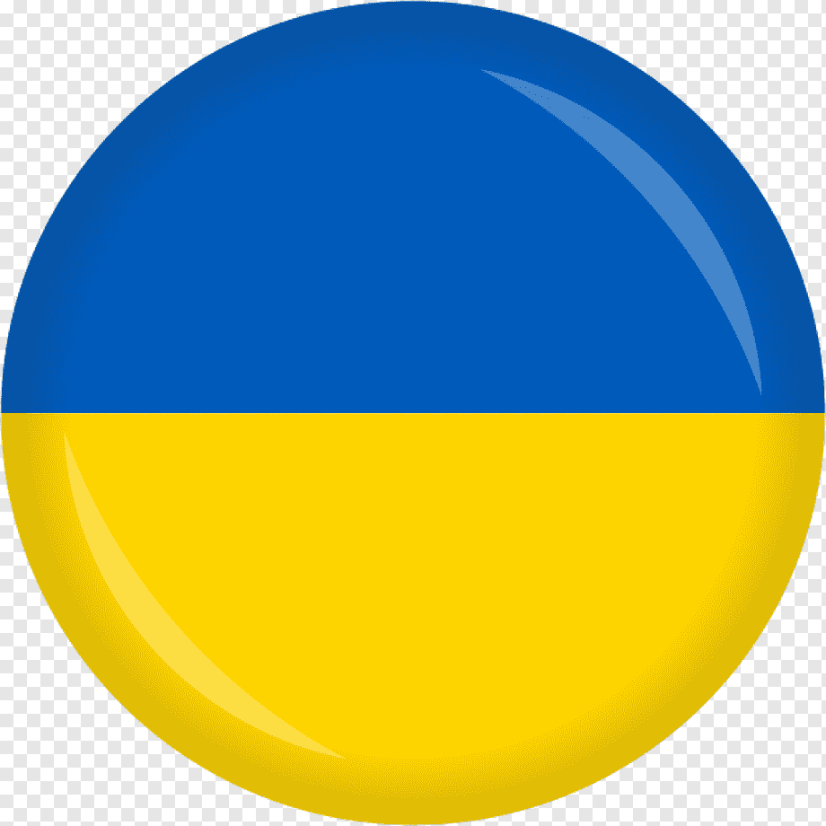

Trainee/Junior Unity Developer
Мова резюме

Про себе
Я молодий фахівець із інтересом до індустрії ігрової розробки. Моїм значним досвідом у цій галузі була участь у конкурсі Game Jam, де я разом з командою з трьох одногрупників розробив гру, якою був присвоєний титул 'Гра в яку будуть грати судді посля Game Jam'. Цей проект дозволив мені розширити свої знання в галузі ігрової розробки, а також розвинути навички командної роботи, креативного мислення та вирішення проблем. Я захоплений ігровою індустрією і прагну продовжити розвиватися у цій галузі.
Освіта
-
Харківський Національний Єкономічний Університет ім. С. Кузнеця
121 "Інженерія ПЗ" | Навчаюсь
-
Харківський радіотехнічний коледж
121 "Інженерія ПЗ" | 28.06.2023
-
Онлайн школа "HeadLight School"
"Unity Developer" | 20.08.2022
Навички
- Git;
- MySQL;
- С# та Unity;
- Adobe Photoshop;
- Досвід 2D і 3D анімації в Unity.
Додаткові навички
- Досвід роботи з Unity API, Coroutines, Mesh-Agent, Animations-Event;
- Розуміння принципів ООП;
- Уміння використовувати шаблони проектування;
- Розуміння методологій Scrum і Kanban;
- Використані середовища розробки: Visual Studio/Code, PyCharm, Unity;
- Базові знання Python, JAVA, HTML, CSS, та JS.
Мої проекти
-
Курсова робота
2D платформер “RABBIT” (С#, Unity) У цьому проекті всі скрипти написані мовою C#. Я використовую 2d анімацію, виклик його всередині коду, основні класи Unity API.
-
Гра розроблена командою під час конкурсу Game Jam 2023
2D симулятор коренеплодів "Under Tree" (C#, Unity) Цей проект розроблявся командою з чотирьох осіб, моїм особистим завданням був UI розробка, анімація та функціональність жуків. А також тестування та створення баг-репортів.
-
Дипломний проєкт
3D Survival Game «Kill Or Die» (С#, Unity) Цей проект я розробляв для свого диплому, робив близько 3 місяців, писав музику сам, я зробив кілька 3D-моделей і текстур, також використовував mesh-agent, coroutines, raycast, Animation Events, принципи ООП та патерни проектування в коді.